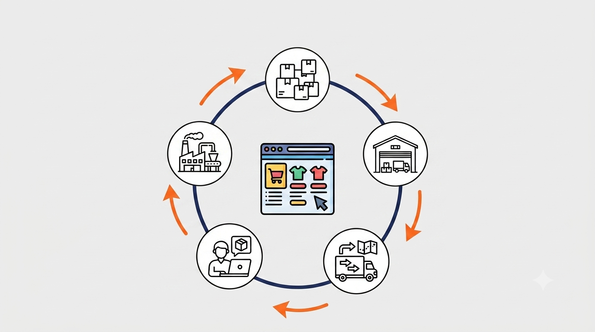
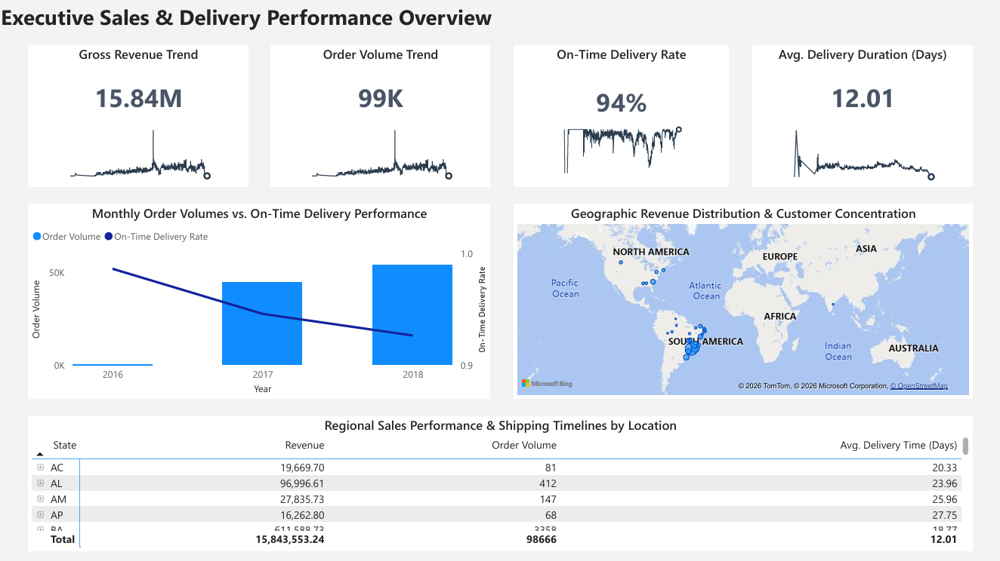
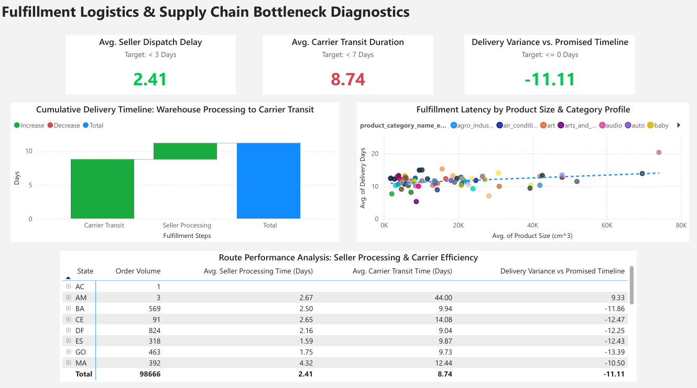
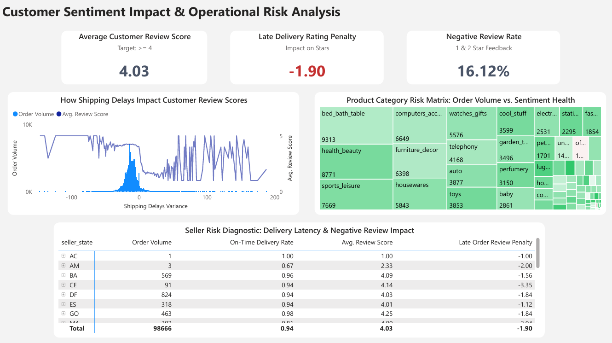

E-Commerce Supply Chain & Customer Sentiment
Data Analytics Project

Project Type: End-to-End Business Intelligence & Analytics
Tools Used: Python, PostgreSQL,Power BI Desktop, DAX, SVG, GitHub
Target Audience: E-Commerce/ Supply Chain Directors, Vendor Relations Managers, CX Leads
GitHub Repository: View on GitHub
Executive Summary
In e-commerce, shipping delays damage customer retention, but businesses rarely know exactly how much. This project breaks down the silos between logistics and customer experience by analyzing 100,000+ orders on the Olist marketplace.
The resulting 3-Page Power BI Dashboard doesn't just track sales, it isolates bottlenecks at the seller and carrier levels, maps physical product limitations, and mathematically proves how delivery delays destroy customer review scores.
Situation: The Blind Spots in E-Commerce Fulfillment
Olist operates as a major marketplace, connecting independent sellers with regional postal carriers across Brazil. While sales were growing, customer satisfaction was highly volatile.
The operations team was facing two major organizational blind spots:
Task: Developing an Integrated Decision-Making Framework
My mission was to design and build an interactive, three-tiered BI solution to:
Action: Engineering the Solution
To turn raw operational data into an executive-ready application, I executed a rigorous three-step pipeline:
- Advanced ETL & Relational Data Engineering (The Foundation) Before building any visuals, the raw transactional data required heavy cleaning and restructuring to ensure analytical performance.
- Python for EDA & ETL: I utilized Python (Pandas/NumPy) to conduct Exploratory Data Analysis (EDA), profile the data distributions, handle missing structural anomalies, and build out the initial Extract, Transform, Load (ETL) pipelines.
- PostgreSQL Relational Storage: I staged and structured the processed data layers inside a PostgreSQL database. Here, I designed relational views (e.g. analytics vw_executive_overview and analytics vw_customer_sentiment) and enforced proper indexing strategies to handle the 100k+ row transactional scope efficiently before importing to the BI layer.
- Power BI Data Modeling & Architecture (The Engine) Inside Power BI, I transformed the relational tables into a high-performance analytical framework.
- Grain Alignment: To bridge the gap between transactional logistics data and qualitative customer reviews, I engineered a bidirectional bridging table (_order_bridge). This resolved complex granularity mismatches, allowing users to select a specific shipping route on Page 2 and instantly see its impact on average review scores on Page 3.
- Performance Optimization: By constructing an optimized Star Schema analytical model, star ratings and review texts were modeled as a dedicated dimension (dim_reviews) to minimize the row-width of the primary logistics fact table, significantly boosting dashboard loading and cross-filtering speeds.
- Dashboard UI/UX Design System (The Experience) I bypassed default Power BI visual templates to create a bespoke, application-like user interface:
- High-Impact KPI Cards (Page 1): I wrote custom DAX scripts that dynamically generate SVG Sparklines directly inside the card background. Rather than showing a flat, static number, these cards visually communicate historic monthly trends in under a second.
- The Supply Chain Step-Ladder (Page 2): Since standard charts struggle to show additive milestones, I created a custom "disconnected table" dimension to build a waterfall chart. This visually isolates the exact hand-off pointfrom the Carrier Transit stage to the Seller Processing stage.
- The Sentiment Curve (Page 3): I engineered an integrated Area and Line chart combination plotting customer order volume distributions alongside the average customer review score against the shipping delays variance scale.
Results: Actionable Business Insights
The dashboard successfully uncovered three major operational truths:
- The On-Time Inflection Point The data mathematically proved that customer satisfaction operates on an immediate threshold. On-time or early deliveries maintain an average review score of 4.03 out of 5 stars. However, the exact moment an order crosses the promised threshold (0 days) and enters positive delay territory, the average review score experiences extreme volatility and plummets toward a 1-to-2 star floor. Furthermore, the dashboard isolates an exact 1.90-star penalty specifically attributed to late delivery instances.
- Business Action: CX teams established a "Red Flag" proactive notification protocol triggered immediately when an order misses its estimated delivery window to manage customer expectations and mitigate negative reviews.
- The Carrier Transit Bottleneck While sellers are often blamed for e-commerce lag, Page 2 isolated that the primary supply chain constraint is transit efficiency. The national average for Seller Dispatch Delay stands at a lean 2.41 days (beating the < 3-day target), whereas Average Carrier Transit Duration balloons to 8.74 days (failing the < 7-day target).
- Business Action: Outlier routes, such as shipments originating or arriving in the AM state, which suffers from a massive 44.00-day average transit duration, were targeted for immediate carrier contract renegotiations and shipping lane diversification.
- Volumetric Capacity Strain The Page 2 multi-variable scatter plot revealed a positive correlation (visualized via a linear trendline) between package volume (cm3) and delivery duration across specific product categories.
- Business Action: Olist logistics restructured their fulfillment models, moving bulkier product categories out of standard postal networks and onto specialized freight carriers to protect transit times.
Key Technical Skills Demonstrated
Power BI Dashboard


